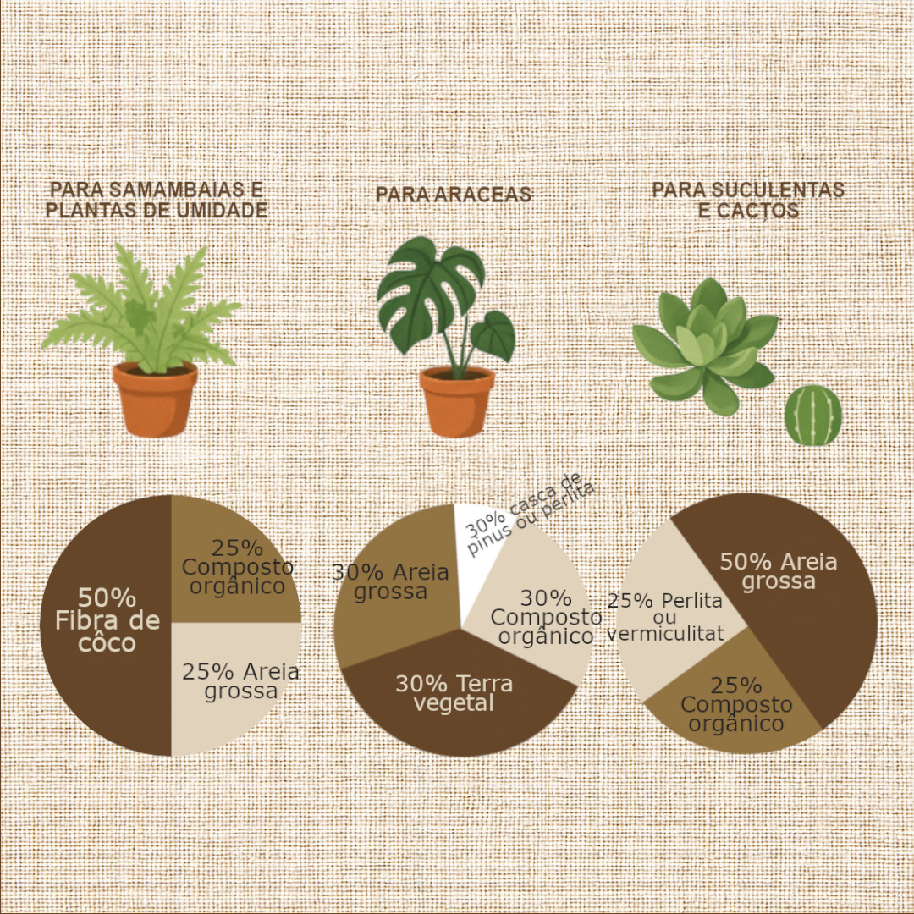
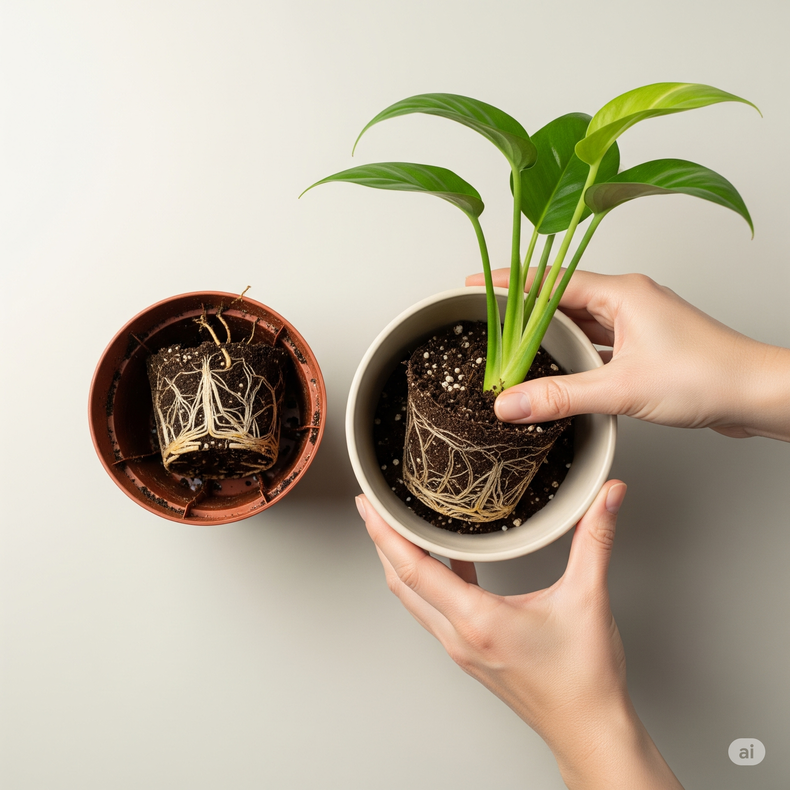

Você sabe o que tem no substrato da sua planta?

No universo da jardinagem, falamos muito sobre luz, água e adubação. Mas e a base de tudo? Aquilo que envolve as raízes e sustenta a vida da sua planta – o substrato? Ele é, sem dúvida, um dos pilares mais negligenciados e, paradoxalmente, um dos mais cruciais para o sucesso de qualquer cultivo.
Se você pensa que "terra é tudo igual", prepare-se para uma revelação. O substrato é um ecossistema complexo, uma matriz viva e dinâmica onde as funções vitais da planta acontecem.
O Substrato: Um Ecossistema Vital e Dinâmico
Para as raízes, o substrato é um universo vivo que oferece:
- Suporte e Ancoragem: Fixa a planta, garantindo estabilidade mesmo em condições adversas.
- Gestão da Água: Armazena a umidade adequada e promove drenagem eficiente.
- Aeração Essencial: Evita a asfixia das raízes, mantendo um fluxo constante de oxigênio.
- Retenção de Nutrientes: Garante a liberação gradual de elementos essenciais como cálcio e magnésio.
- Vida Microbiana: Microrganismos benéficos transformam a matéria orgânica em nutrientes e protegem as raízes contra doenças.
Componentes Comuns do Substrato (Aprofundado)
- Terra vegetal: Rica em matéria orgânica, mas compacta facilmente. Precisa de aeração adicional.
- Fibra de coco: Leve, sustentável, retém bem a umidade. Deve ser lavada para remover sais.
- Vermiculita: Mineral expandido que armazena água e nutrientes.
- Perlita: Granulado vulcânico que melhora a drenagem e previne compactação.
- Areia grossa: Ideal para cactos e suculentas. Evita acúmulo de água.
- Casca de pinus: Cria espaços de ar, essencial para raízes de epífitas.
- Carvão vegetal (biochar): Retém nutrientes, regula o pH e estimula a vida microbiana.
- Húmus de minhoca: Fonte rica de nutrientes e enzimas. Torna o solo mais fértil e vivo.
- Esfagno: Alta retenção de umidade sem compactar. Ideal para propagação.
- Pedra-pomes ou brita: Inertes, aumentam a longevidade da drenagem.
- Casca de arroz carbonizada: Leve e porosa. Reduz compactação e melhora oxigenação.
- Casca de ovo moída: Fonte lenta de cálcio. Neutraliza o pH e ajuda contra lesmas.
Mitos Populares: Pó de Café no Substrato
Benefícios: Rico em nitrogênio e minerais. Melhora a estrutura do solo e pode atrair minhocas.
Riscos: Pode compactar o solo, conter cafeína prejudicial a algumas plantas e favorecer mofo.
Recomendações: Composte antes de usar. Evite uso puro. Use apenas em plantas acidófilas e maduras.
A Arte da Mistura: Substratos Customizados para Cada Planta

- Suculentas: 50% substrato pronto, 25% perlita ou pedra-pomes, 25% areia grossa.
- Monstera e Philodendron: 40% substrato base, 30% casca de pinus, 15% perlita, 15% húmus ou fibra de coco.
- Samambaias: 50% orgânico, 20% fibra de coco, 20% perlita/vermiculita, 10% húmus.
- Orquídeas: 40% casca de pinus, 30% carvão vegetal, 30% esfagno.
Justificativa:- Casca de pinus: estrutura leve e aerada, permite que as raízes respirem e sequem entre regas.
- Carvão vegetal: regula o pH, filtra toxinas e previne a proliferação de fungos.
- Esfagno: retém umidade suficiente, sem compactar, mantendo as raízes hidratadas sem encharcar.
O Substrato Também Envelhece!

Com o tempo, o substrato pode compactar, empobrecer e prejudicar a planta. Repotagens a cada 1–2 anos são ideais para renovar nutrientes, restaurar a estrutura e permitir um crescimento saudável.
- Água que não drena adequadamente.
- Cheiro estranho ou presença de mofo.
- Planta parada no crescimento ou com raízes visíveis pelos furos do vaso.
💡 Dica: Ao replantar, aproveite para observar o estado das raízes e eliminar partes mortas. Isso evita doenças e melhora a absorção de nutrientes.
Um substrato saudável é invisível, mas transforma toda a planta. Comece por ele! E se você já tem uma receita secreta ou usa um ingrediente especial, compartilhe com a gente nos comentários!
← Voltar para o blog